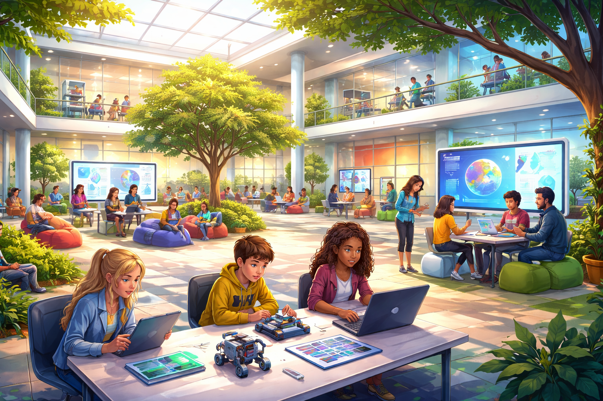

Ilyen egy jó iskola
jó iskola
a jövő iskolája
A jövő iskolája szerintem
A jövő iskolája nem csak egy épület lesz. Nem kell minden nap ugyanabban az időben bejárni, mert a diákok a saját napirendjük szerint tanulhatnak.
A jövő iskolájában nem lesznek hagyományos tanórák. Nem klasszikus tananyagokat tanulunk, hanem témák mentén haladunk.
A jövő iskolájában nem lesznek felesleges tantárgyak, és nem magolással, hanem valós helyzeteken keresztül tanulunk.
Az iskola nyitott és rugalmas lesz. Nem lesznek fix padok, hanem mozgatható terek, műhelyek, stúdiószobák és pihenőrészek.
Ez az iskola nem arra készít fel, hogy vizsgákat írjunk, hanem arra, hogy boldoguljunk az életben. Nem elveszi az önbizalmunkat, hanem felépíti.

Készítette: Zsinkai Kristóf